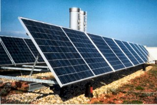
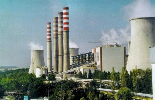
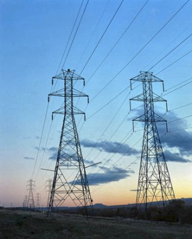
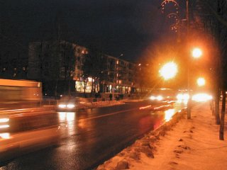

Interacţiunile sarcinilro electrice ne oferă posibilităţi formidabile de transformare şi distribuire a resurselor disponibile de energie.
Forme diverse de energie (chimică, mecanică, nucleară, luminoasă) pot fi transformate în energie de interacţiune a sarcinilor electrice. Astfel de transformări se petrec într−o baterie, într−un dinam sau într−o celulă solară (figura 1).
|  | Figura 1. Panou de celule solare care transformă energia luminoasă (de la Soare) în energie electrică. |
Astfel de transformări au loc pe scară largă în centralele electrice (figura 2): termocentrale (utilizând energia chimică a cărbunelui sau hidrocarburilor, eliberată prin ardere), hidrocentrale (utilizând energia potenţială gravitaţională a apei din lacurile de acumulare) sau centrale nucleare (utilizând energia de interacţiune a protonilor din nucleele atomilor).
|  | Figura 2. Centrală electrică. |
Energia electrică astfel obţinută poate fi transmisă şi distribuită eficient acolo unde aceasta este necesară, chiar la distanţe de mii de kilometri (figura 3).
|  | Figura 3. Linii de transmisie a energiei electrice. |
Controlând recombinarea purtătorilor de sarcină de semne contrare, energia de interacţiune a sarcinilor electrice poate fi transformată eficient în forme utile de energie (figura 4).
|  | Figura 4. Energia de interacţiune dintre sarcinile electrice este transformată în forme utile de energie. |
Astfel viaţa noastră devine mai sigură şi mai confortabilă!